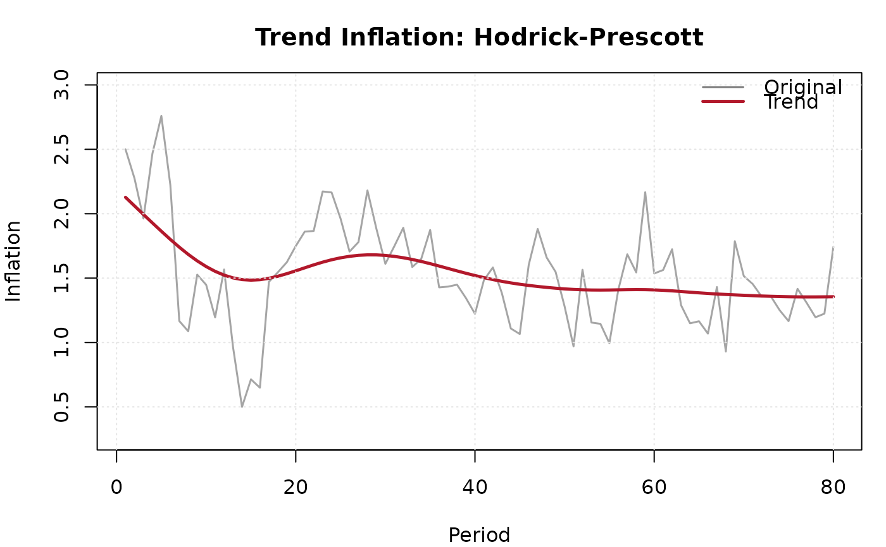

Extracts the trend component from an inflation series using one of four methods: Hodrick-Prescott filter, Beveridge-Nelson decomposition, exponential smoothing, or centred moving average.
Arguments
- x
Numeric vector. An inflation time series.
- method
Character. One of
"hp","beveridge_nelson","exponential_smooth", or"moving_average".- frequency
Character. Data frequency:
"quarterly"(default),"monthly", or"annual". Used to set the HP filter lambda (whenlambda = NULL) and moving average window (whenwindow = NULL).- lambda
Numeric or
NULL. Smoothing parameter for the HP filter. IfNULL, defaults based onfrequency: 6.25 for annual, 1600 for quarterly (Hodrick and Prescott, 1997), or 14400 for monthly (Backus and Kehoe, 1992).- window
Integer or
NULL. Window size for the moving average method. Defaults to 4 for quarterly, 12 for monthly, or 3 for annual.
Value
An S3 object of class "ik_trend" with elements:
- trend
Numeric vector. The estimated trend component.
- cycle
Numeric vector. The cyclical component (original minus trend).
- method
Character. The method used.
- lambda
Numeric. HP filter lambda (if applicable).
- window
Integer. Moving average window (if applicable).
- alpha
Numeric. Exponential smoothing parameter (if applicable).
- original
Numeric vector. The original series.
References
Hodrick, R. J. and Prescott, E. C. (1997). "Postwar U.S. Business Cycles: An Empirical Investigation." Journal of Money, Credit and Banking, 29(1), 1-16.
Ravn, M. O. and Uhlig, H. (2002). "On Adjusting the Hodrick-Prescott Filter for the Frequency of Observations." Review of Economics and Statistics, 84(2), 371-376.
Examples
data <- ik_sample_data("headline")
tr <- ik_trend(data$inflation, method = "hp")
print(tr)
#>
#> ── Trend Inflation ─────────────────────────────────────────────────────────────
#> • Method: Hodrick-Prescott (lambda = 1600)
#> • Mean trend: 1.5261
#> • Cycle volatility (SD): 0.3405
#> • Observations: 80
plot(tr)

tr_ma <- ik_trend(data$inflation, method = "moving_average", window = 4)
print(tr_ma)
#>
#> ── Trend Inflation ─────────────────────────────────────────────────────────────
#> • Method: Moving Average (window = 4)
#> • Mean trend: 1.5298
#> • Cycle volatility (SD): 0.2118
#> • Observations: 80